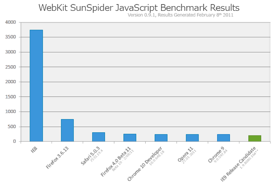

Javascript Brown Bag Session 1
A brief history of javascript:
- The old days:
- And fun syntax:
CommonJS
- Like the JCP for javascript
- Formalizes standards to progress javascript towards a platform
- Specifications for:
- binary handling (datatypes, streams, etc)
- filesystem apis
- module/package system
- unit testing
- async/promises
- ...
- Has achieved critical mass where most js tools implement at least the module system if not more
Modern js engines
- v8 (chrome)
- spidermonkey (firefox)
- rhino (mozilla's embeddable engine)
- nitro (safari)
Companies with a vested interest in making javascript better and faster
- Google (except for dart, doh!)
- Apple
- Microsoft
- Yahoo
- Mozilla
NodeJS
NodeJS is evented IO for V8 javascript
...in node everything runs in parallel, except your code
- runs on an single-threaded event loop much like in the browser
- is built on v8 with native bindings
- supports CommonJS modules, and native extensions
- has core support for everything from http to file handling to unit testing
- has many great 3rd party packages (modules) and a nice system for managing them
A simple NodeJs application
Actually never mind, javascript still sucks.
We should use coffeescript instead.
^_^
Elevator speech
CoffeeScript is a little language that compiles into JavaScript.
How coffeescript is better than javascript
How coffeescript is better than javascript
- Looping and Comprehensions
- vs
How coffeescript is better than javascript
Contrived example anyone?
Contrived unit tests anyone?
A quick vows primer- Vows is an asynchronous bdd test framework for node
- You start with a *Suite*
- Add *Batches* to it (which execute in parallel)
- A *Batch* has 1 or many *Contexts*
- A *Context* probably has a *Topic* (which is thing you throw asserts at)
- A *Context* also has 1 or many *Vows* (which are functions that assert stuff on the topic)
/